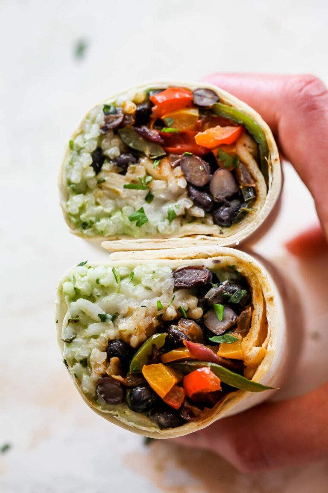

The ultimate Vegetarian Burrito recipe featuring cilantro-lime rice, chipotle-spiced black beans, sautéed peppers and onions, and a zesty avocado cream sauce. These veggie burritos are freezer-friendly and perfect for weekday meal prep.
To a food processor add:
In a small saucepan combine: